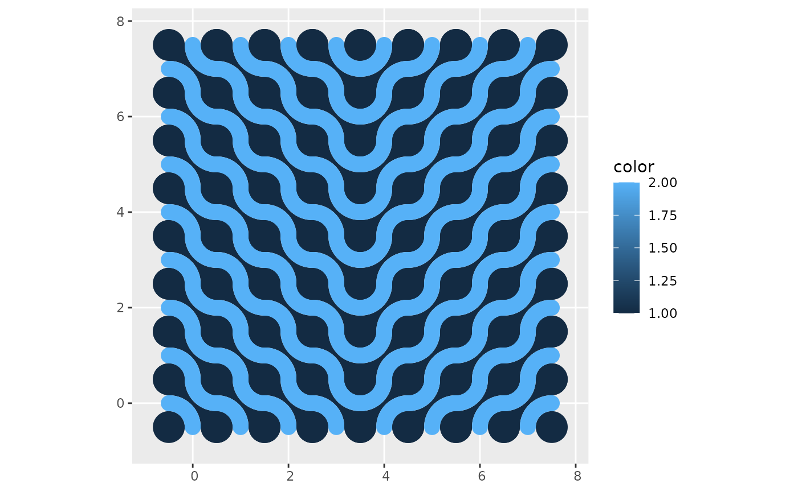
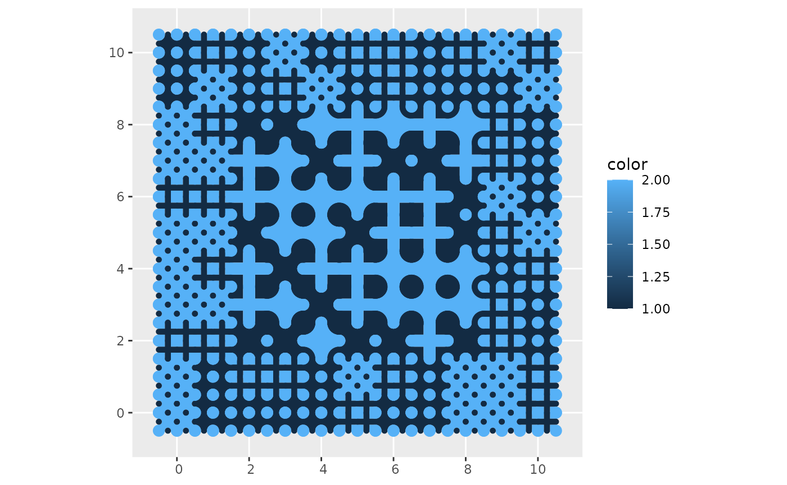

Designing Mosaics
designing-mosaics.Rmd
library(dplyr)
#>
#> Attaching package: 'dplyr'
#> The following objects are masked from 'package:stats':
#>
#> filter, lag
#> The following objects are masked from 'package:base':
#>
#> intersect, setdiff, setequal, union
library(ggplot2)
library(truchet)The function st_truchet_ms() allows the quick creation of mosaics randomizing the type of tiles, scales, and placement as per the inputs. For greater control of the assembly of the mosaic, it is also possible to use a data frame as an input (i.e., a “container”) with parameters coded by location.
To illustrate this, here we create a data frame to serve as a container. Functions like case_when() of ifelse() can be useful to control what goes where:
xlim <- c(0, 7)
ylim <- c(0, 7)
# Create a data frame with the spots for tiles
container <- expand.grid(x = seq(xlim[1], xlim[2], 1),
y = seq(ylim[1], ylim[2], 1)) %>%
mutate(tiles = case_when(x <= 3 ~ "dl",
x > 3 ~ "dr"),
scale_p = 1)This data frame needs the following columns x and y (the coordinates of the center of tiles of scale 1), tiles (a character vector with the type of tiles), and scale_p (the scale of the tiles). The container is designed to use tiles at scale 1 only, and it will use “dl”-type tiles when \(x\le 3\) and “dr”-type tiles when \(x>3\):
mosaic <- st_truchet_ms(df = container)Plot the mosaic:

In this example, the mosaic is built with tiles sampled from a list provided, and smaller tiles are used towards the edges of the mosaic:
xlim <- c(0, 10)
ylim <- c(0, 10)
# Create a data frame with the spots for tiles
container <- expand.grid(x = seq(xlim[1], xlim[2], 1),
y = seq(ylim[1], ylim[2], 1)) %>%
# Sample from the list of tiles provided
mutate(tiles = sample(c("+", "+.", "x."), n(), replace = TRUE),
scale_p = case_when((x < 1 | x > 9) | (y < 1 | y > 9) ~ 1/2,
(x > 1 & x < 9) & (y > 1 & y < 9) ~ 1,
TRUE ~ 1/2))Create mosaic using the designed container:
mosaic <- st_truchet_ms(df = container)Plot mosaic:
